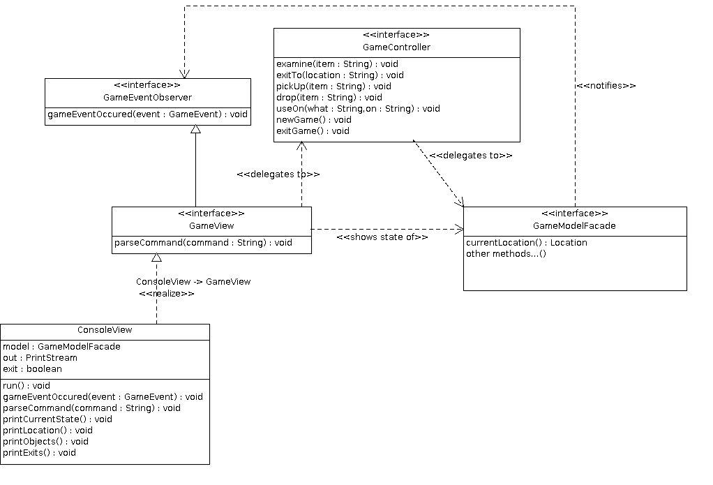

Použiji architektonický vzor MVC.
Reprezentuje konzolové UI. Stará se o rozpoznávání příkazů od uživatele a rozpoznané příkazy deleguje na Controller. Pomocí vzoru Observer je zaregistrován jako posluchač událostí z Modelu (rozhraní GameEventObserver). Předpokládám zatím herní událost (metoda gameEventOccured(GameEvent e), kterou View obslouží tak, že pouze vypíše další řádek na výstup (např: "Trpaslík odešel z místnosti."). Je také možné, že by mohly nastávat zásadní změny stavu hry, které by vyžadovaly kompletní překreslení UI (např: "Probořila se pod tebou podlaha a propadl jsi se do sklepa." - změna lokace bez toho, aby to hráč vyžádal). Potom by se rozhraní GameEventObserver rozšířilo o novou metodu (např: repaintNeeded()).
View má také přímou vazbu na Model, protože se ho dotazuje na stav hry, který potom vypisuje na konzoli. (např: currentLocation() pro získání aktuální lokace).
Stará se o zpracování příkazů od uživatele, které mu jsou předpřipraveny (zparsovány) View. Samotné vykonávání příkazů deleguje na Model. Zatím nepředpokládám, že bude potřeba, aby Controller měl vazbu na View, ať už přes Observer, nebo přímo. Je možné, že tato potřeba vyvstane později.
Model představuje veškerou "business logiku aplikace" a nemá přímo o existenci View ani Controlleru.
Doménový model bude zapouzdřen za fasádou. Ta by mohla zpřístupňovat přímo některé operace, které by jinak bylo nutné vyvolávat způsobem porušujícím princip LoD. Fasáda modelu by mohla například zveřejnit metodu List<GameObject> objectsInCurrentLocation(). Bez této metody by bylo nutné provést sekvenci volání např: currentLocation().itemsPresent().
Hlavní abstrakcí hry bude GameObject - třída, reprezentující objekt ve hře. Toto rozhraní bude obsahovat metody, které budou reagovat na možné hráčovy akce - seber předmět, manipuluj s předmětem, apod. Protože způsob reakce na povely bude u mnoha předmětů stejný, mohl bych toto chování zapouzdřit do vzoru Strategy. GameObject by pak mohl na Strategy objekty delegovat svoje reakce na hráčovy akce. Například PickupStrategy by definovala, jak předmět reaguje na pokus o zvednutí. ImmovablePickupStrategy by na každý pokus o zvednutí vytvořila událost pro View oznamující hráči, že předmět je příliš těžký. Otázka je, jestli se v tomto případě nejedná spíš o vzor State, protože objekt GameObject nebude umožňovat svým klientům své Strategy měnit a naopak by je mohl sám na sobě vyměnit po provedení nějaké akce.
Herní místnosti (lokace) budou reprezentovány samostatným objektem Location, protože narozdíl od GameObject na nich nepůjde vyvolávat povely, slouží pouze jako kontejner na herní objekty.
Předpokládám také existenci globálního objektu Game, kde by se držel mimo jiné hráčův inventář a mohly by zde být pomocné metody, například pro vyvolání herní akce (které poslouchá View).